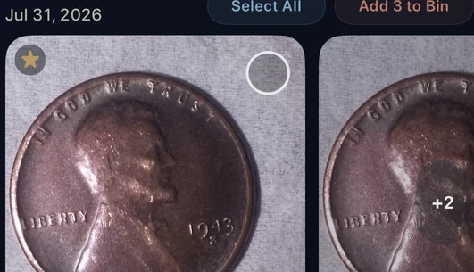

The short answer
If Photos shows a Duplicates collection, start there and review each pair or group before merging. If your clutter also includes repeated but non-identical shots, use a broader review workflow and inspect every group before deleting.
Start with Apple Photos Duplicates
Open Photos and look for Duplicates under Utilities or More Items. Its exact location can vary by iOS version, and the collection appears only when Photos has identified duplicate items. Apple’s current iPhone guide shows the latest navigation and merge steps.
What Apple Photos can help with
Apple Photos is a strong built-in first step for duplicate items. You can review a detected set and choose whether to merge it. If you do not see the collection, Photos may still be indexing the library or may not have found items it considers duplicates.
Exact copies, near-duplicates, and similar photos
A duplicate is the same media stored more than once. A near-duplicate may contain a small edit, export change, or metadata difference. Similar photos are separate captures from the same scene or moment. Five shots from a birthday, meal, sunset, pet, or selfie session can look repetitive without being true duplicates.
That distinction matters because similar photos require more judgment. Read our explanation of similar photos vs. duplicate photos before clearing repeated shots.
| Use case | Apple Photos | CleanLens |
|---|---|---|
| Detected duplicates | Built-in collection with merge controls. | Groups exact copies inside a broader cleanup workflow. |
| Similar, non-identical shots | May not appear as duplicates. | Groups likely related shots so you can compare them. |
| Review flow | You choose whether to merge a detected set. | You choose what enters the Bin, review it again, then request deletion through iOS. |
How to choose which copy to keep
- Check whether one version is favorited or intentionally edited.
- Compare resolution, sharpness, framing, and visible quality.
- Keep versions that have distinct metadata or personal meaning.
- If the difference is unclear, keep both and revisit later.
Review duplicate groups with CleanLens
CleanLens presents copies as a group and leaves the selection with you. In the example below, the coin photos are grouped together and the interface exposes the selection controls before anything moves to the Bin.

What happens after you add photos to the Bin?
Adding an item to the CleanLens Bin does not delete it immediately. The Bin is a second review step. You decide whether to continue, and the final request uses the normal iOS photo-deletion confirmation.
Deleted photos normally move to Recently Deleted for 30 days, unless you permanently remove them sooner. If iCloud Photos is enabled, deletion also syncs to your other devices. Apple’s recovery guide explains the current recovery steps.
If you are unsure which copy matters, keep it. Recovering storage is useful; preserving the right photo matters more.
A safer duplicate-cleanup checklist
- Confirm your library is syncing or backed up as expected.
- Review the duplicate group before selecting anything.
- Keep the sharper, intentionally edited, favorited, or more meaningful version.
- Move only clear copies to the Bin.
- Review the Bin before requesting deletion.
- Check Recently Deleted if you think you made a mistake.
For the full sequence, use the safe photo-library cleanup guide.
Frequently asked questions
Where is the Duplicates collection on iPhone?
Look in Photos under Utilities or More Items, depending on your iOS version. The collection appears only when Photos has identified duplicate items.
Why do I not see Duplicates in Apple Photos?
Photos may not currently have identified duplicate media. Your library can still contain repeated but non-identical shots and other clutter.
Is an image dupe the same as a duplicate photo?
Image dupe is informal shorthand for a duplicate picture: the same or nearly identical media stored more than once.
Does adding a photo to the CleanLens Bin delete it immediately?
No. The Bin is part of the review flow. Final removal still requires your decision and the normal iOS confirmation.
Begin with lower-risk clutter
Start with the obvious copies.
CleanLens helps you review duplicate groups alongside similar shots and other cleanup categories, without turning cleanup into blind automatic deletion.